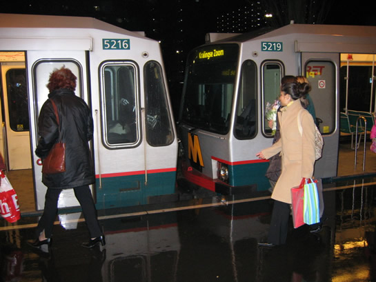
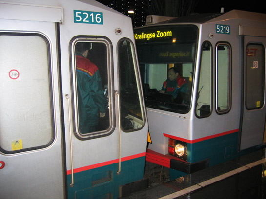
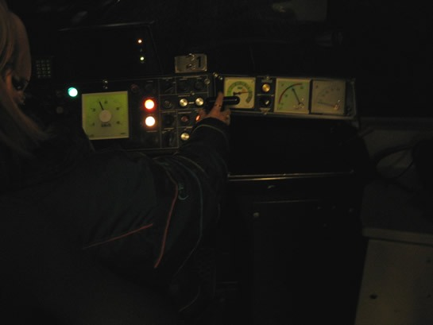
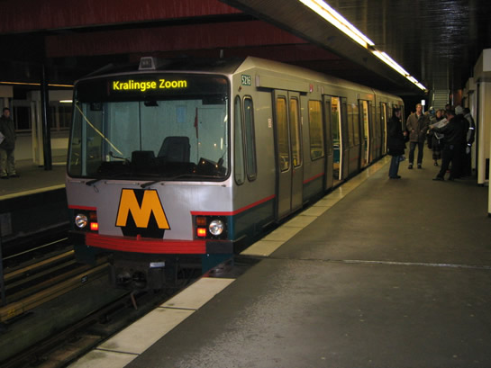
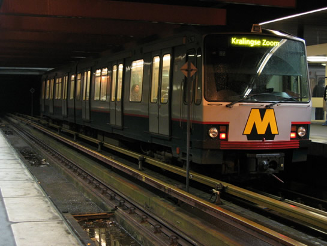
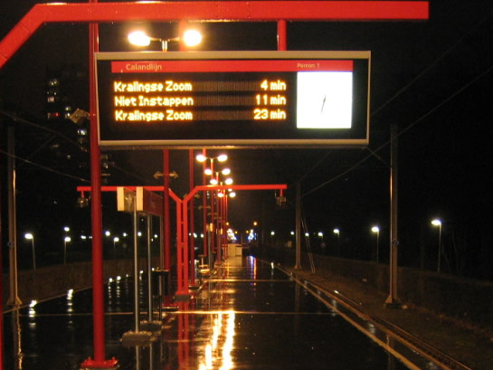
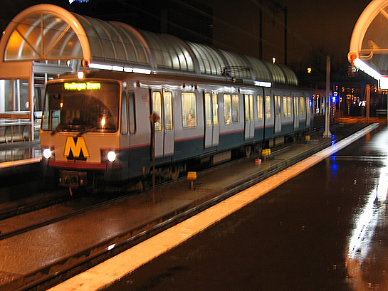
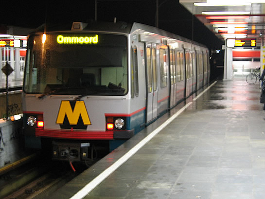

Pendeldienst Binnenhof - Kralingse Zoom een feit...
- dinsdag 09 december 2008 10:15
- Geschreven door Joachim
Gisteravond rond 18.35 werd voor het eerst na een aantal jaar weer afgekoppeld en gesplitst op station Binnenhof, het eindpunt van de metro/sneltramlijn naar Ommoord. Wagendienst 570 werd gesplitst, dit leverde twee losse rijtuigen op: de 5216 als wagendienst 570 en de 5219 als wagendienst 582. Om 18.38, eigenlijk twee minuten te laat, reed er na een paar jaar weer een enkele sneltram op het metro/sneltramtracé. Dat leverde reacties op van de reizigers: "Rijden ze nu ook al met één wagon?"

Het is even wennen, voortaan zal het voorste treindeel vertrekken naar Kralingse Zoom. Blijf je in het achterste treindeel zitten, dan vertrek je 20 minuten later.

Het ontkoppelen lukte aanvankelijk niet zo goed, gelukkig was rijtuig 5216 goed gezind en ontkoppelde na een paar keer wél.

De '1' aan de rechterzijde van de TreinTv geeft aan met hoeveel rijtuigen er gereden wordt in de combinatie. Eén dus!
Reizigers die op de stations Alexander, Prinsenlaan, Schenkel en Capelsebrug stonden te wachten aan het einde van het perron, moesten deze keer 60 meter lopen om bij het enkele 'trammetje' aan te komen. Het is even wennen.
De pendeldienst Binnenhof - Kralingse Zoom komt op station Kralingse Zoom aan op spoor 3. Hier wordt de reizigers verzocht over te stappen op een metro richting Schiedam Centrum of Hoogvliet, welke vertrekt vanaf spoor 1. De wachttijden voor een volgende metro kunnen regelmatig oplopen tot meer dan 10 minuten.
Om het pendelen mogelijk te maken moest er aan de ATB-signalering rondom wisselcomplex Kralingse Zoom II het een en ander gewijzigd worden. Nu is daar de bedrijfssoort 'Automatisch Keren' ingebouwd. Dit heeft als voordeel dat de treindienstleider op de Centrale Verkeersleiding niet tien keer op een avond handmatig een rijweg hoeft te stellen van en naar Kralingse Zoom spoor 3.
Vanuit station Capelsebrug worden achtereenvolgend de signaleringen Groen80, Groen70, Groen50, Groen35 en in de perronsectie 10 Permissief ontvangen. Om het keerproces sneller te laten verlopen, wordt dit in de toekomst nog aangepast. Voor meer informatie kan je op de ATB-informatiepagina kijken.

Rijtuig 5216 als wagendienst 570 op station Kralingse Zoom, spoor 3. De reizigers staan geduldig te wachten op een dienstwagen richting Schiedam Centrum/Hoogvliet.

Na enkele minuten arriveert ook wagendienst 582, rijtuig 5219, op station Kralingse Zoom.
De twee wagendiensten die uitgevoerd worden met een enkel metrorijtuig, kunnen niet gereden worden met de nieuwere Bombardier-rijtuigen. Dit komt omdat het nieuwe metromaterieel slechts van één bestuurderscabine is voorzien. Rijden met de hulpstuurstand in de reizigersdienst zou onverantwoord zijn.
Ook op de DRIM's is er nu een nieuwe eindbestemming bijgekomen: Kralingse Zoom. Helaas wordt de treinlengte nog niet aangegeven op de DRIM wanneer er een enkel metrorijtuig op komst is. Waarschijnlijk zal dit ter zijner tijd nog in de software opgenomen worden.


Een korte metro, of tóch een tram?

Wagendienst 582 retour richting Ommoord.
De nieuwe dienstregeling die per 10 januari in ging, had onder andere tot gevolg dat bovengenoemde pendel ging rijden. Ook op het gebied van metrotreinen die binnen een bepaald tijdbestek naar de remise gaan, is wat veranderd. Tussen 17.00 uur en 19.30 gaan er 18 wagendiensten buiten dienst naar remise 's-Gravenweg. Rond 19.00 uur is het daarom op station Capelsebrug een grote drukte met 'inrukkende' wagendiensten. Ook het keerspoor van station Capelsebrug wordt hierbij gebruikt. Het kan enige tijd duren voordat een metrotrein hier gekeerd is.
Gisteravond ontstond door de grote drukte op de baan nabij Capelsebrug een 'metrofile', zowel richting Ommoord/Zevenkamp/Capelle a/d IJssel als richting Schiedam Centrum en Hoogvliet. Al met al leverde dit nagenoeg geen vertragingen op.